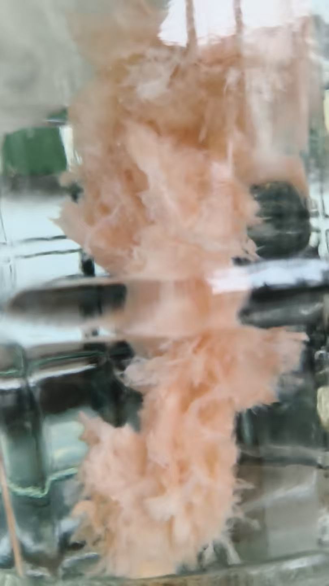
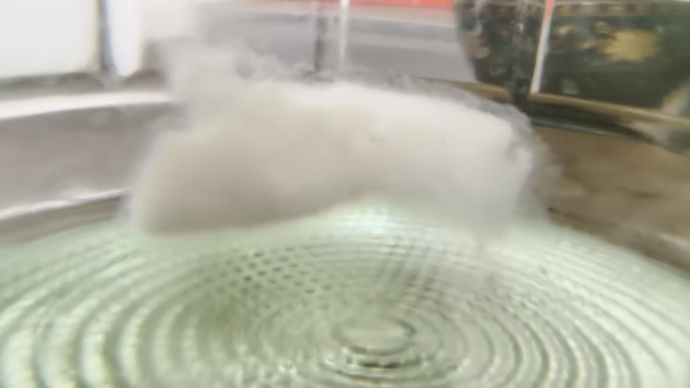
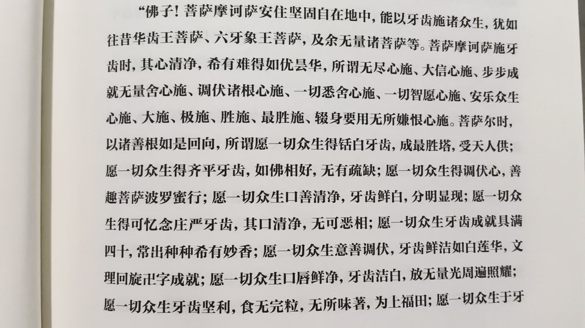
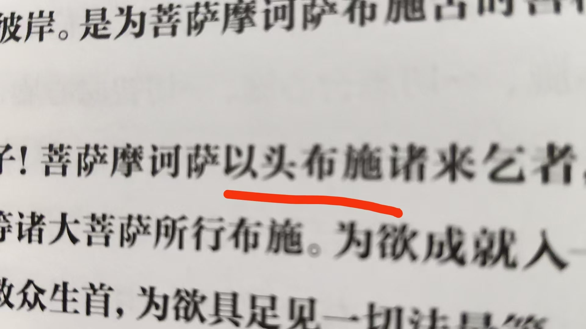
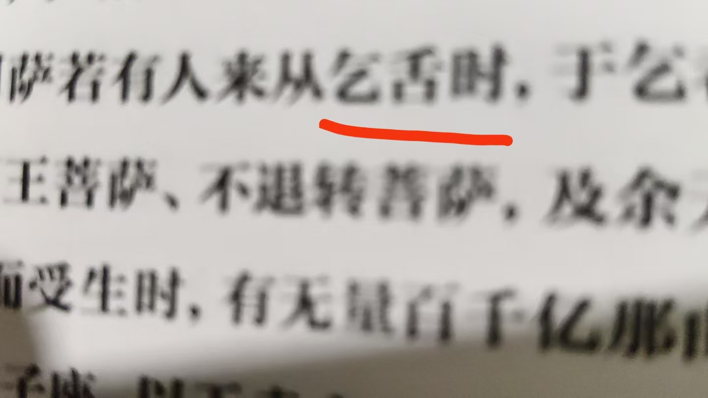
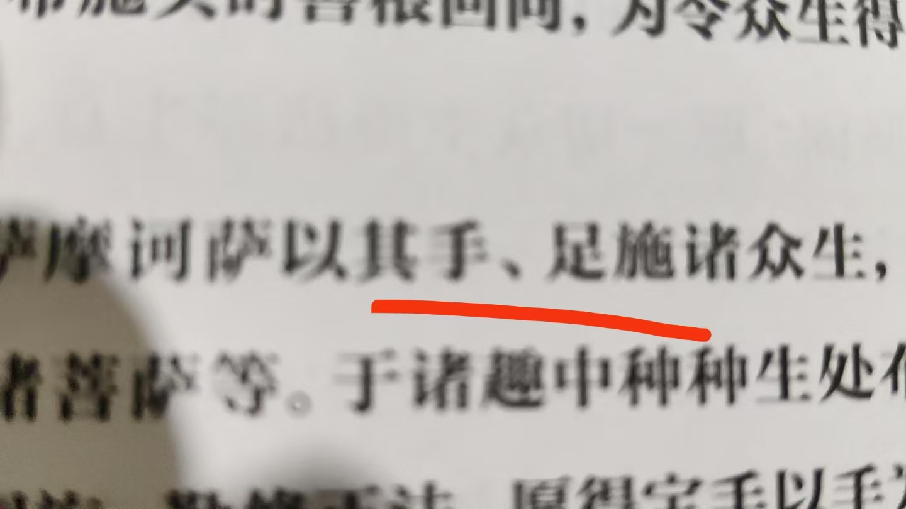
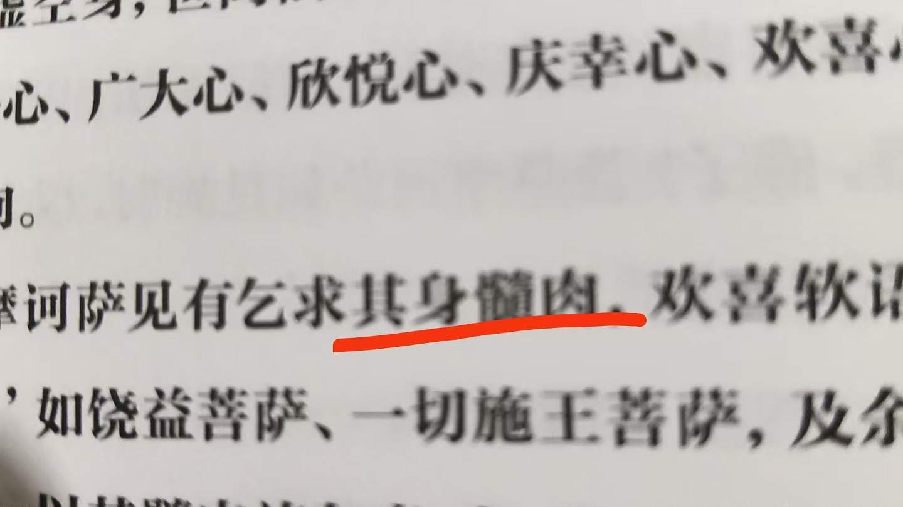
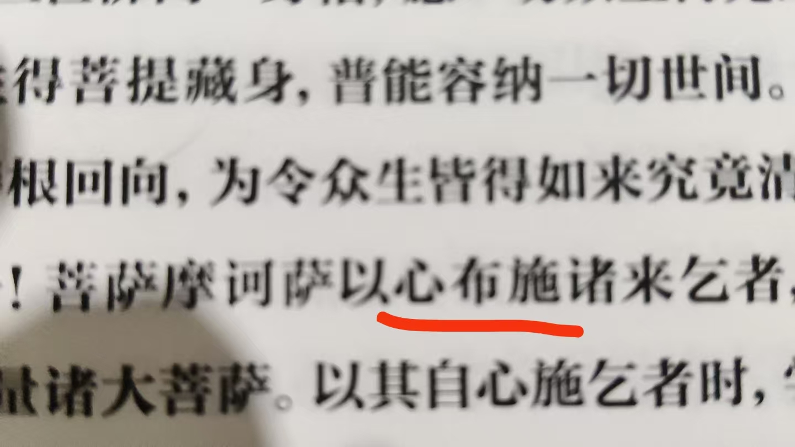
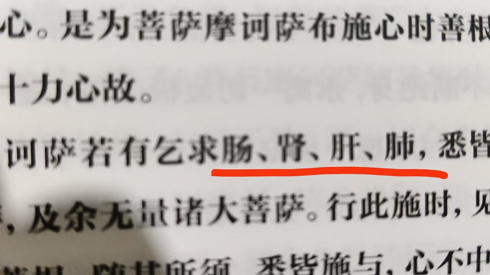

20261017华严 舍旧牙，生新牙的修法
修炼修行民间文化符咒术法 原始对话记录[呲牙][呲牙]
吃辣喝酒，一个大牙上火
昨晚读八十华严第二部
就看到，舍旧牙，生新牙的修法
妙哉，无比殊胜

这太岁，老贵了
不过，老感觉不好，喝不下去
[呲牙][呲牙]

这个洁白如玉，也是感觉喝不了
适应适应，再说
@紫鸢真人 你学生挺懂事的，知道帮助他们，回报你，哎，我真诚帮助别人换来的是无语
[呲牙][呲牙][呲牙]
教修炼，先教品德
是啊，无德之人无福
狂风暴雨
这次地里够了
小麦能种上了
后天说还下
[憨笑][憨笑]
啥方法？
我最拿手的就是移云布雨，移云止雨
那天从我，负性高维身开始
只用念力
不做法
@龙玉 就是说，把旧牙给了要的人，然后生出光牙
跟千手观音一样
舍弃了双臂喂了恶鬼，救了父亲
后来生出千手千眼
@紫鸢真人 那你舍一颗旧牙给要的人，可以让他长出来吗？
以前我讲过牙的故事
牙里有一个老头，半死不活的，我换上了一个童子，牙就好了
我家小子就愿意跟师父你玩这个
应该是换了牙的负场，相
一个相
@红树林 [呲牙][呲牙]
主要山东大旱，半年不下了
再不下，就错过种植季了
师父，玩这个了，再叫上我家小子
[呲牙][呲牙]

[憨笑][憨笑]这是修炼牙齿细节
众生是谁


舌布施

手足布施
毁坏身体，血布施

骨髓，肉布施

心布施

五脏六腑
等等等等
舍掉重塑
就是前几天我说的，恐龙啃食我的肉体
吃就行，尽管吃
吃完了我才修成空无光化身
就是这样
大舍之心
大彻大悟
如果惊怖，就修不成了
这一关就过不了
八十华严，不急着读了
读一节修一节
只能说，太妙了
太厉害了
施身法，断我执
[强][强][强]
舍一颗牙
吃辣喝酒，一个大牙上火。
昨晚读八十华严第二部，就看到，舍旧牙、生新牙的修法。"妙哉，无比殊胜。"
中间插了两句别的。这太岁，老贵了，不过老感觉不好，喝不下去。这个洁白如玉，也是感觉喝不了，适应适应再说。
有人说了句心里话：你学生挺懂事的，知道帮助他们，回报你。我真诚帮助别人，换来的是无语。他回："教修炼，先教品德。" 是啊，无德之人无福。
窗外狂风暴雨。这次地里够了，小麦能种上了，后天说还下。有人问啥方法。"我最拿手的就是移云布雨，移云止雨。那天从负性高维身开始，只用念力，不做法。"
然后回到牙。
"就是说，把旧牙给了要的人，然后生出光牙。" 跟千手观音一样——舍弃了双臂喂了恶鬼，救了父亲，后来生出千手千眼。以前他讲过牙的故事：牙里有一个老头，半死不活的，我换上了一个童子，牙就好了。应该是换了牙的负场，相。一个相。
往下是布施的次序。众生是谁。舌布施，手足布施，毁坏身体、血布施，骨髓、肉布施，心布施，五脏六腑，等等等等。舍掉，重塑。
"就是前几天我说的，恐龙啃食我的肉体。吃就行，尽管吃。吃完了我才修成空无光化身。" 就是这样。大舍之心，大彻大悟。"如果惊怖，就修不成了。这一关就过不了。"
所以八十华严，不急着读了。读一节，修一节。"只能说，太妙了。太厉害了。"
施身法，断我执。